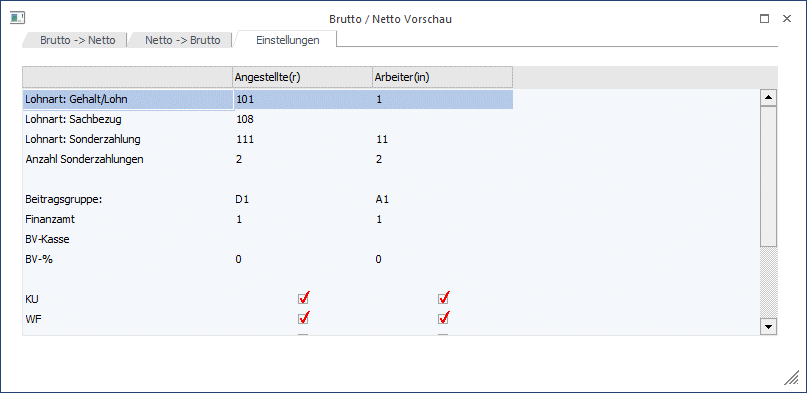
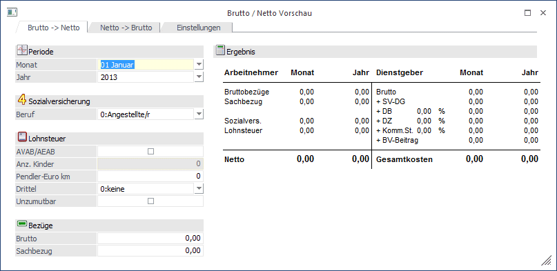

Die Netto-Vorschau, die über den Menüpunkt
1 Stammdaten
1 Arbeitnehmer
1 Kalkulation
1 Brutto / Netto Vorschau
aufgerufen werden kann, bietet die Möglichkeit, Bezugsforderungen zu kalkulieren.
Das Fenster ist in 3 Register unterteilt:
ü Brutto -> Netto
Damit kann
von einem Bruttowert das voraussichtliche Nettoentgelt berechnet werden.
ü Netto -> Brutto
Damit kann
von einem Nettobezug das voraussichtliche Bruttoentgelt berechnet werden.
ü Einstellungen
Hier können
grundsätzliche Einstellungen für die Berechnungen vorgenommen werden.
Wenn der Menüpunkt zum ersten Mal aufgerufen wird, wird die Meldung
angezeigt. Dies bedeutet, dass zuerst die Einstellungen vorgenommen werden müssen. Wird dies nicht gemacht, kann auch keine Kalkulation vorgenommen werden.
Eingabefelder Einstellungen
Ø Lohnart: Gehalt/Lohn
Hier muss für Arbeiter bzw. Angestellte die Lohnart eingetragen werden, mit der der Grundbezug berechnet wird. Durch Drücken der F9-Taste kann nach allen Lohnarten gesucht werden.
Ø Lohnart: Sachbezug
Hier muss für Arbeiter bzw. Angestellte die Lohnart eingetragen werden, mit der ein eventl. Sachbezug berechnet werden soll. Durch Drücken der F9-Taste kann nach allen Lohnarten gesucht werden.
Ø Lohnart: Sonderzahlung
In den beiden Feldern wird die Lohnart für Sonderzahlungen für Arbeiter bzw. Angestellte eingetragen. Diese Information wird für die Berechnung der Gesamtkosten/Jahr benötigt. Durch Drücker der F9-Taste kann nach allen bereits angelegten Lohnarten gesucht werden.
Ø Anzahl Sonderzahlungen
Aus der Auswahllistbox kann die Anzahl der Sonderzahlungen gewählt werden, die der AN bekommt. Es stehen die Werte 0 bis 3 zur Verfügung. Diese Information wird ebenfalls für die Ermittlung der Gesamtkosten/Jahr benötigt.
Ø Beitragsgruppe:
Aus der Auswahllistbox kann die Standard-Beitragsgruppe für Arbeiter bzw. Angestellte gewählt werden. Dies ist die Basis für die Berechnung der SV.
Ø Finanzamt
Aus der Auswahllistbox kann das Finanzamt gewählt werden, von dem die Zusatzprozentsätze (KommSt., DB und DZ) geholt werden sollen.
Ø BV-Kasse
Aus der Auswahllistbox kann die BV-Kasse ausgewählt werden, die für die Berechnung verwendet werden soll.
Ø BV-%
Aus der Auswahllistbox kann der Prozentsatz gewählt werden, die bei der BV-Kasse hinterlegt sind. Damit werden dann die BV-Beiträge berechnet.
Darunter können für Angestellte und Arbeiter die Pflichtigkeiten der SV-Nebenbeträge eingestellt werden, wobei die Einstellungen von der zuvor eingegebenen Beitragsgruppe übernommen werden. Diese Einstellungen werden ebenfalls für die Berechnung der SV benötigt.

Diese Einstellungen werden gespeichert, sobald das Fenster verlassen wird. Die Einstellungen können jederzeit verändert werden.
Brutto -> Netto
Das Register Brutto -> Netto ermittelt aufgrund eines Bruttobezuges und der Einstellungen das Netto. Dabei können folgende Einstellungen vorgenommen werden:
Ø Monat / Jahr
Aus der Auswahllistbox kann das Monat/Jahr gewählt werden, für das die Berechnung durchgeführt werden soll. Standardmäßig wird immer die aktuelle Abrechnungsperiode vorgeschlagen.
Ø Sozialversicherung
Aus der Auswahllistbox "Beruf" kann gewählt werden, ob es sich um einen Arbeiter oder einen Angestellten handelt.
Ø AVAB/AEAB
Durch Aktivieren der Checkbox wird definiert, dass der AN den Anspruch auf einen Alleinverdiener- bzw. einen Alleinerzieherabsetzbetrag hat. Zusätzlich dazu kann die Anzahl der Kinder für die Berechnung des Kinderzuschlages (ab Juli 2004) eingegeben werden.
Ø Pendler-Euro km
Hier kann hinterlegt werden wie viele Kilometer zur Berechnung des Pendlereuros herangezogen werden sollen (Entspricht der Kilometerangabe am Antragsformular)
Ø Drittel
Hier kann hinterlegt werden zu welchem Anteil die Pendlerpauschale berücksichtigt werden soll
Ø Unzumutbar
Diese Checkbox ist zu aktivieren, wenn das große Pendlerpauschale berücksichtigt werden soll.
Ø Brutto
Eingabe des gewünschten Bruttobetrages
Ø Sachbezug
Eingabe des Sachbezuges.
Nachdem einmal ein Bruttobezug eingegeben wurde, wird auf der rechten Seite des Fensters das Ergebnis angezeigt. Dieses Ergebnis wird sofort geändert, sobald eine Eingabe im Fenster verändert wird.

Informationen
Welche Informationen werden bei der Brutto-Netto Berechnung angezeigt:
Ø Arbeitnehmer
Die Nachfolgenden Informationen werden sowohl für das ausgewählte Monat als auch für das gesamte Jahr dargestellt:
Ø Bruttobezüge
Hier wird der eingegebene Bruttobezug angezeigt.
Ø Sachbezug
Hier wird der eingegebene Sachbezug ausgewiesen.
Ø Sozialversicherung
Die Sozialversicherung wird anhand der Einstellungen Arbeiter/Angestellter und der dazugehörigen Lohnarten ermittelt.
Ø Lohnsteuer
Die Lohnsteuer wird anhand der Lohnsteuertabelle unter Berücksichtigung des AVAB und der Pendlerpauschale sowie der Lohnarten berechnet.
Ø Netto
Ermittelt sich auch Brutto + Sachbezüge - SV - LST.
Ø Dienstgeber
Die Nachfolgenden Informationen werden sowohl für das ausgewählte Monat als auch für das gesamte Jahr dargestellt:
Ø Brutto
Hier wird der Bruttobezug ausgewiesen.
Ø SV-DG
Hier wird er SV-Beitrag Dienstgeber ausgewiesen.
Ø DB
Hier wird er DB-Beitrag ausgewiesen.
Ø DZ
Hier wird er DZ-Beitrag ausgewiesen.
Ø KommSt.
Hier wird die KommSt. ohne Berücksichtigung eines eventl. Freibetrages ausgewiesen.
Ø BV-Beitrag
Hier wird der BV-Beitrag, der für den AN zu zahlen ist, ausgewiesen.
Ø Gesamtkosten.
Hier werden die Gesamtkonten des Dienstgebers ausgewiesen.
Netto -> Brutto
Das Register Netto -> Brutto ermittelt aufgrund eines gewünschten Nettobezuges und der Einstellungen das daraus benötigte Brutto. Dabei können folgende Einstellungen vorgenommen werden:
Ø Monat / Jahr
Aus der Auswahllistbox kann das Monat/Jahr gewählt werden, für das die Berechnung durchgeführt werden soll. Standardmäßig wird immer die aktuelle Abrechnungsperiode vorgeschlagen.
Ø Sozialversicherung
Aus der Auswahllistbox kann gewählt werden, ob es sich um einen Arbeiter oder einen Angestellten handelt.
Ø AVAB/AEAB
Durch Aktivieren der Checkbox wird definiert, dass der AN den Anspruch auf einen Alleinverdiener- bzw. einen Alleinerzieherabsetzbetrag hat. Zusätzlich dazu kann die Anzahl der Kinder für die Berechnung des Kinderzuschlages (ab Juli 2004) eingegeben werden.
Ø Pendlerpauschale
Aus der Auswahllistbox kann gewählt werden, welches Pendlerpauschale der AN in Anspruch nehmen kann.
Ø Netto
Eingabe des gewünschten Nettobetrages
Ø Sachbezug
Eingabe des Sachbezuges.
Nachdem einmal ein Nettobezug eingegeben wurde, wird auf der rechten Seite des Fensters das Ergebnis angezeigt. Dieses Ergebnis wird sofort geändert, sobald eine Eingabe im Fenster verändert wird.
Informationen
Welche Informationen werden bei der Brutto-Netto Berechnung angezeigt:
Ø Arbeitnehmer
Die Nachfolgenden Informationen werden sowohl für das ausgewählte Monat als auch für das gesamte Jahr dargestellt:
Ø Bruttobezüge
Hier wird der errechnete Bruttobezug angezeigt.
Ø Sachbezug
Hier wird der eingegebene Sachbezug ausgewiesen.
Ø Sozialversicherung
Die Sozialversicherung wird anhand der Einstellungen Arbeiter/Angestellter und der dazugehörigen Lohnarten ermittelt.
Ø Lohnsteuer
Die Lohnsteuer wird anhand der Lohnsteuertabelle unter Berücksichtigung des AVAB und der Pendlerpauschale sowie der Lohnarten berechnet.
Ø Netto
Ermittelt sich auch Brutto + Sachbezüge - SV - LST.
Ø Dienstgeber
Die Nachfolgenden Informationen werden sowohl für das ausgewählte Monat als auch für das gesamte Jahr dargestellt:
Ø Brutto
Hier wird der Bruttobezug ausgewiesen.
Ø SV-DG
Hier wird er SV-Beitrag Dienstgeber ausgewiesen.
Ø DB
Hier wird er DB-Beitrag ausgewiesen.
Ø DZ
Hier wird er DZ-Beitrag ausgewiesen.
Ø KommSt.
Hier wird die KommSt. ohne Berücksichtigung eines eventl. Freibetrages ausgewiesen.
Ø BV-Beitrag
Hier wird der BV-Beitrag, der für den AN zu zahlen ist, ausgewiesen.
Gesamtkosten.
Hier werden die Gesamtkonten des Dienstgebers ausgewiesen.
Das Ergebnis, das auf der rechten Seite des Fenster ausgewiesen wird, kann durch Anklicken mit der rechten Maustaste und Auswahl der Option "Seite ausdrucken" auch ausgedruckt werden.
Durch Drücken der ESC-Taste wird das Fenster geschlossen.